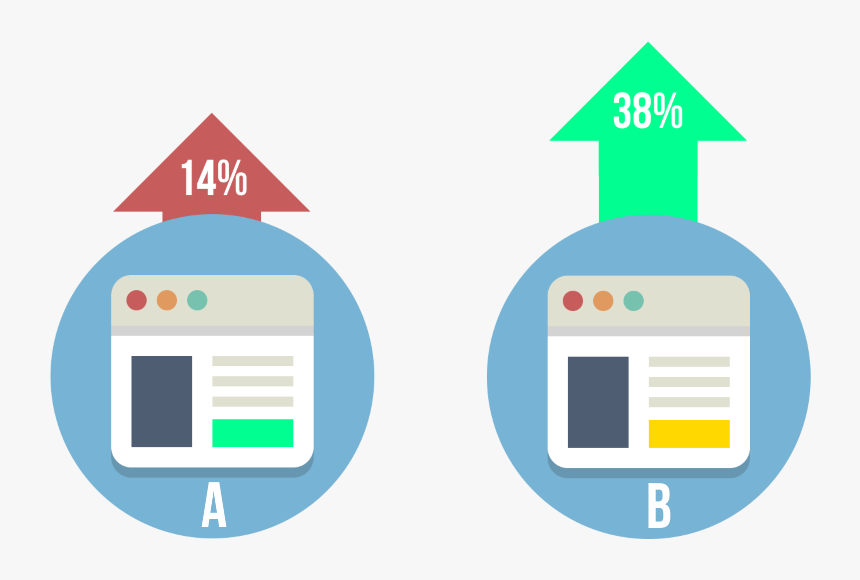

Predictive Analytics
and Forecasting Sales
TThis project involves using various analytical techniques such as segmentation, clustering, and time series forecasting to provide startegic recommendations on where and how a grocery store chain should expand. The project aims to deliver solutions to complex business problems and utilizes tools such as Alteryx, Tableau, and Excel.

In this project, performed an explaoratory data analysis (EDA) and performed ETL operation on an Electronic Store data and
answered relevant business questions through data visualization.

This project involves designing and analyzing an A/B test using Alteryx to determine whether a coffee shop chain should introduce a new menu. The process involves performing ETL (Extraction, Transformation, Load) to build a data model and using statistical analysis to provide a recommendation based on the A/B test results.
Digital Music Store
Database Analysis
This project involves using SQL to extract and analyze data stored in a digital music store database. Through the use of data manipulation techniques, including filtering and sorting, the project aims to provide insights into customer behavior, such as the types of music purchased and the locations of customers. The project also involves analyzing and visualizing data using MS-Exce.
Flight Delays in the US:
Analyzing Airlines and Airports with Tableau
In this project, I utilized Tableau and Excel to build interactive dashboards and uncover insights from a dataset of flight delays in the US. By analyzing airline and airport performance, identifying optimal flight times, and utilizing data visualization techniques, I was able to provide valuable recommendations for both passengers and industry stakeholders.